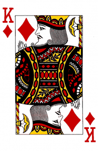

Коротко о BMW M5 F90 BMW M5 F90 — шестое поколение легендарной модели. Оно отличается от своих предшественников тем, что впервые в истории M5 была оснащена системой полного привода M xDrive. Это решение вызвало споры среди пуристов, но оно сделало автомобиль невероятно быстрым и стабильным даже в самых сложных условиях. Под капотом F90 скрывается 4,4‑литровый V8 с двумя турбинами, выдающий до 625 лошадиных сил (в версии Competition) и 750 Нм крутящего момента. Этот двигатель разгоняет автомобиль до 100 км/ч всего за 3,3 секунды, что делает его одним из самых быстрых седанов в мире. Рекорды и достижения BMW M5 F90 BMW M5 F90 вошла в историю не только благодаря своим техническим характеристикам, но и благодаря установке нескольких рекордов: Мировой рекорд по самому длительному дрифту В декабре 2017 года BMW M5 F90 вошла в Книгу рекордов Гиннесса. Профессиональный водитель Йохан Шварц за рулём F90 установил рекорд по самому длительному дрифту — проехав 374 километра боком за 8 часов! Для достижения такого результата использовалась специальная система дозаправки автомобиля прямо на ходу. Рекорд скорости на Нюрбургринге На знаменитой трассе Нюрбургринг BMW M5 F90 показала впечатляющее время круга — 7 минут 35 секунд. Это сравнимо с результатами некоторых суперкаров, что ещё раз подчёркивает спортивный характер седана. Лучший седан по версии множества изданий Модель получила множество наград от автомобильных изданий, включая титулы “Лучший спортивный седан” и “Автомобиль года”. F90 заслуженно называют эталоном среди премиальных спортивных автомобилей.